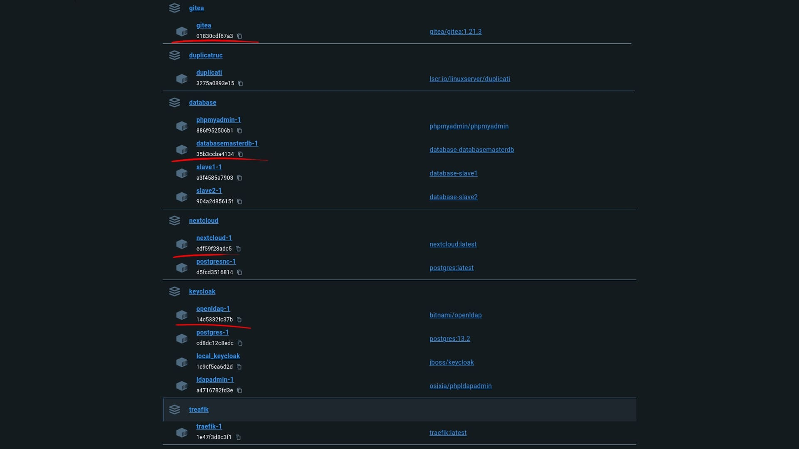
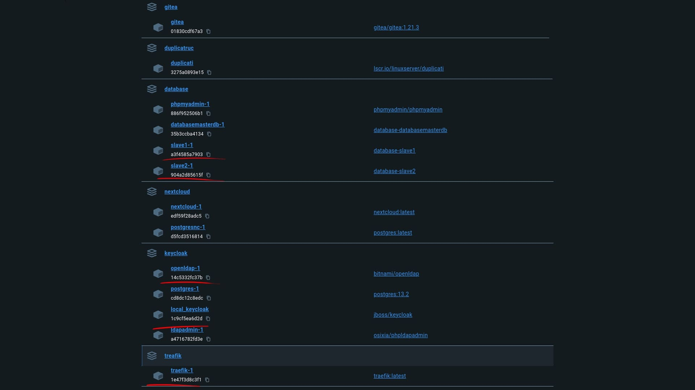
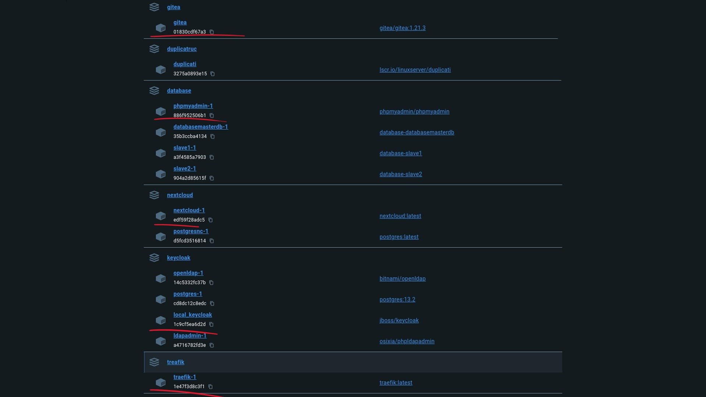
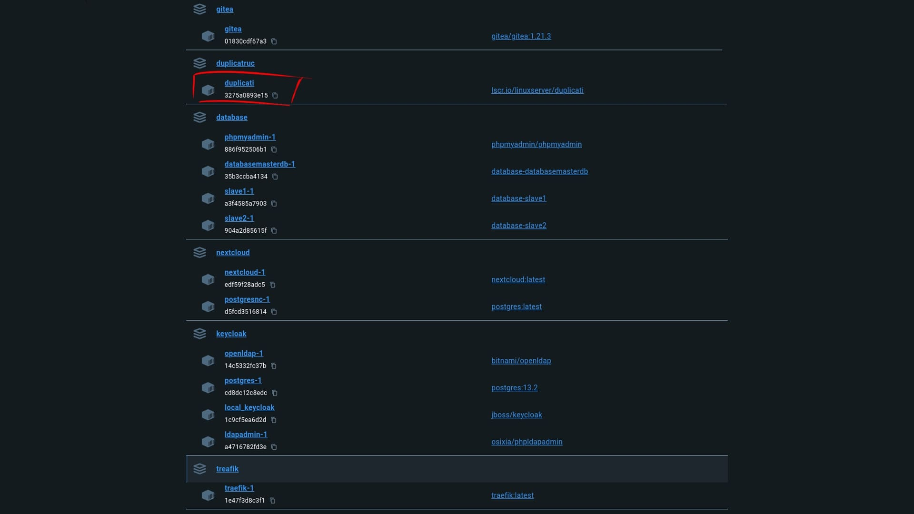
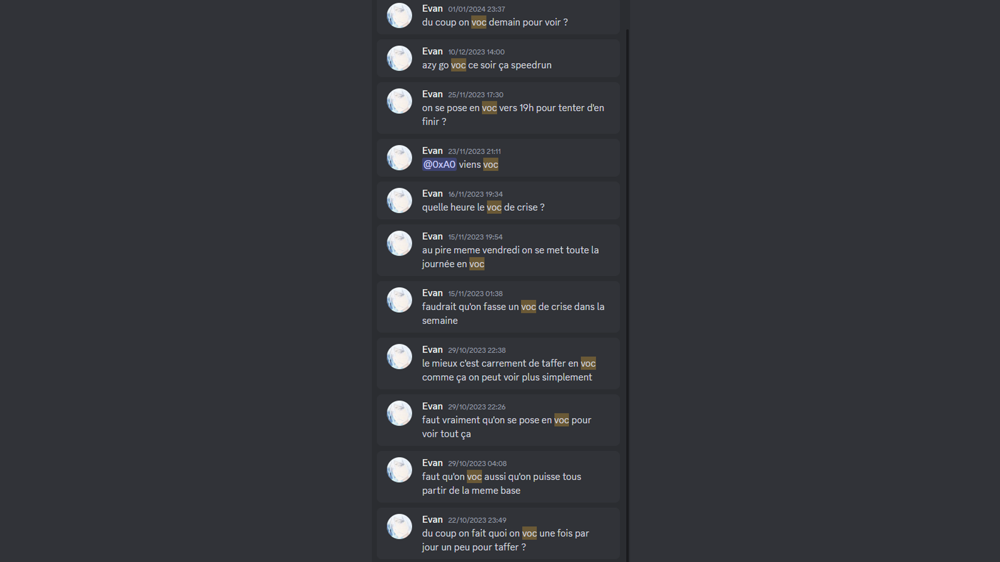
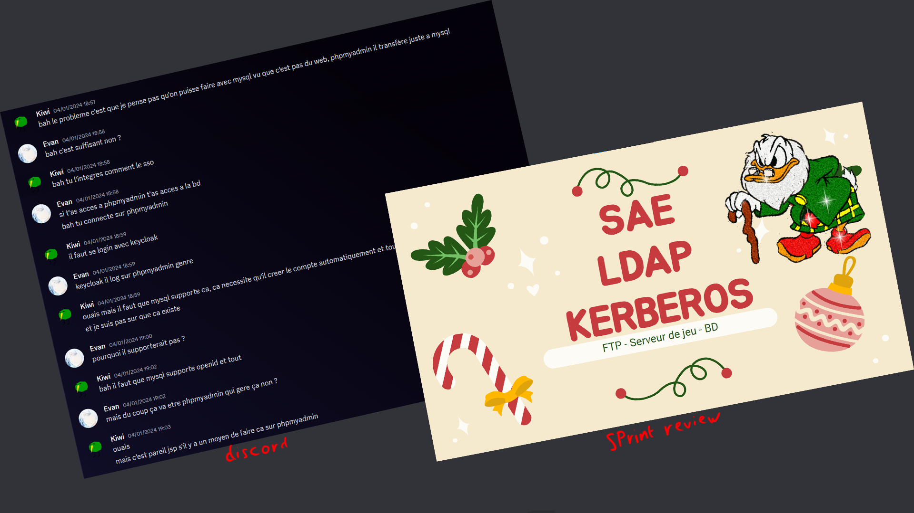
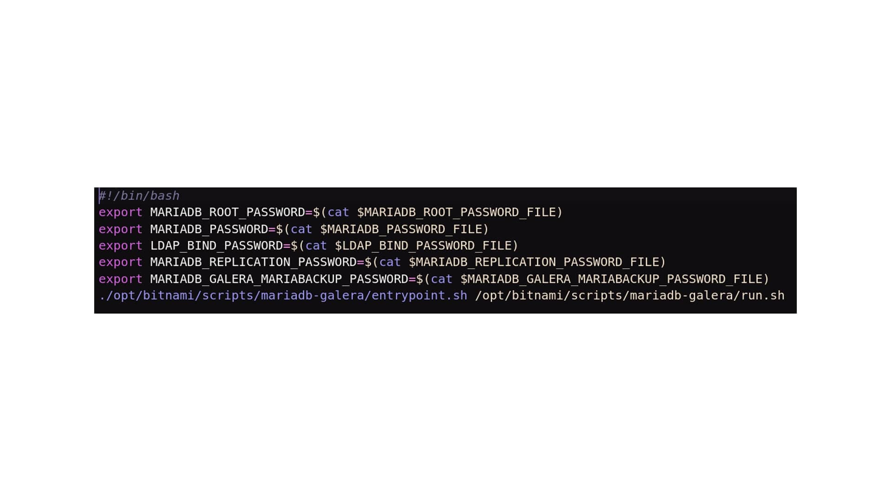
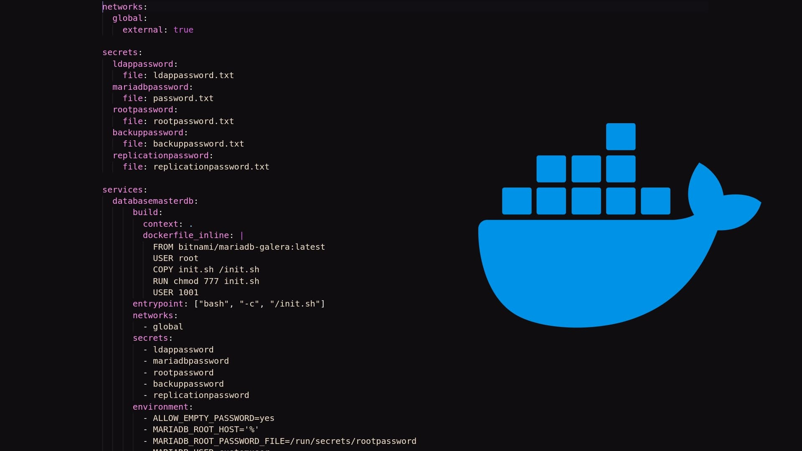

Description :
Ce projet intervient dans le contexte de la SAE de l'année 3 du BUT informatique (parcours déploiement d'applications communicantes et sécurisées). Il consistait à la base à installer un service de partage de données accessible via plusieurs machines et à créer un système de connexion centralisé fiable via OpenLDAP. Cependant, au fur et à mesure du temps, le projet à évolué. La demande finale était donc d'installer trois services (partage de données, base de données et un troisième au choix) avec un système de connexion centralisé via OpenLDAP ainsi qu'un système SSO, le tout sécurisé.
Composantes essentielles :
CE 1.01 | En respectant les besoins décrits par le client | Niveau nécessaire estimé : Expertise
Les besoins finaux du client étaient : "Installer un service de partage de données, base de données et un service au choix. Ces services devront être sécurisés et utiliseront OpenLDAP ainsi qu'un SSO pour l'authentification centralisée."

Comme vous pouvez le voir sur l'image ci-dessus, nous avons fait en sorte que chacune des demandes du client soit respectée.
CE 3.01 | En sécurisant le système d'information & CE 3.02 | En appliquant les normes en vigueur et les bonnes pratiques de sécurité | Niveau nécessaire estimé : Maitrise
La sécurité est un élément essentiel pour un système d'information. En effet, si le système d'information n'est pas sécurisé, il est vulnérable aux attaques et aux intrusions.

Pour ce projet, nous avons donc décidé d'implémenter plusieurs éléments de sécurité. Tout d'abord, nous avons mis en place un proxy avec Traefik qui permet de sécuriser les connexions aux différents services. Ensuite, nous avons mis en place un système de connexion centralisé via OpenLDAP et un SSO avec Keycloak. Nous avons enfin mis en place un système de secrets grâce à Docker et un système de sauvegarde grâce à Duplicati.
CE 3.03 | En offrant une qualité de service optimale | Niveau nécessaire estimé : Maitrise
La qualité de service est un élément essentiel pour un client. C'est pour cela que nous avons décidé d'utiliser des services qui fonctionnent sur le web et qui sont donc accessibles depuis n'importe quel OS.

CE 3.04 | En assurant la continuité d'activité | Niveau nécessaire estimé : Connaissance
La continuité d'activité est un élément essentiel pour un client. En effet, si le système d'information n'est pas disponible, le client ne peut pas travailler et donc perd de l'argent. Nous avons donc mis en place un système de sauvegarde pour faciliter la mise en place d'un PCA.

CE 6.01 | En inscrivant sa démarche au sein d'une équipe pluridisciplinaire | Niveau nécessaire estimé : Maitrise
Le travail s'effectuant par groupes de 4, il est important de savoir inscrire sa démarche au sein de l'équipe. Pour cela j'ai personnellement joué le rôle de scrum master afin d'instaurer des réunions entre les membres permettant de mieux s'organiser.

CE 6.04 | En développant une communication efficace et collaborative | Niveau nécessaire estimé : Expertise
Une communication efficace est extrêmement importante avec le client d'une part pour lequel des revues de sprint ont été organisés mais aussi avec les membres du groupe où on utilisait discord afin de communiquer simplement.

Apprentissages critiques :
AC 31.02 | Faire évoluer une application existante | Niveau nécessaire estimé : Expertise
Lors des revues de sprint, le client avait tendance à ajouter de nouvelles fonctionnalités à notre travail comme par exemple le SSO. Il était donc très important de modifier notre application.
AC 33.01 | Créer des processus de traitement automatisés | Niveau nécessaire estimé : Maitrise
Pour un accès plus simple aux fonctionnalités, nous avons décidé d'en automatiser un certains nombre.

AC 33.02 | Configurer un serveur et des services réseaux de manière avancée | Niveau nécessaire estimé : Expertise
Les services sont entièrement mis en place via docker

AC 33.03 | Appliquer une politique de sécurité au niveau de l'infrastructure | Niveau nécessaire estimé : Maitrise
Un système de sauvegarde, un proxy, les secrets docker ainsi qu'un cluster pour la base de donnée ont été implémentés afin d'avoir une politique de sécurité efficace.
AC 31.04 | Déployer et maintenir un réseau d'organisation en fonction des besoins | Niveau nécessaire estimé : Maitrise
Le principe de cette SAE était de configurer des services complexes dans le but d'améliorer le système d'onformation d'une organisation fictive.
AC 36.04 | Accompagner le management de projet informatique | Niveau nécessaire estimé : Maitrise
Des revues de sprint étaient organisées régulièrement afin d'avoir un maximum de retour du client sur le projet.